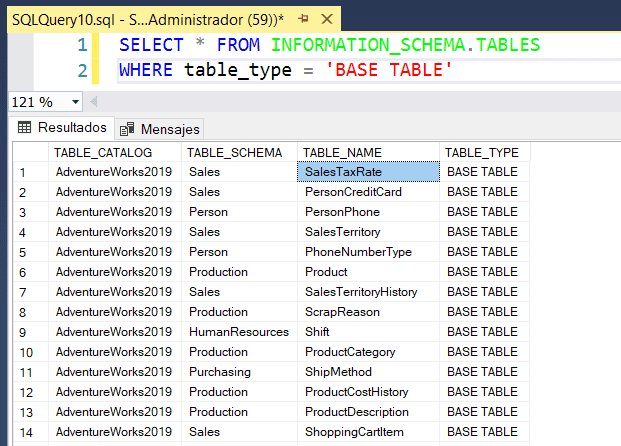

🔍 ¿Por qué aprender SQL?
SQL es la columna vertebral de todas las bases de datos relacionales. Esencial para desarrolladores, analistas de datos, administradores de sistemas e incluso profesionales de negocio.
🎯 Beneficios del curso “SQL Como Crear Bases de Datos”
- Acompañamiento paso a paso en cada módulo :contentReference[oaicite:9]{index=9}
- Explicación de errores comunes y cómo resolverlos :contentReference[oaicite:10]{index=10}
- “Datos dorados”: tips y trucos profesionales :contentReference[oaicite:11]{index=11}
- Estructurado por módulos + lecciones enfocadas :contentReference[oaicite:12]{index=12}
- Domina diseño, creación, consultas y gestión de bases
🛠️ Qué aprenderás en este curso
✅ Diseño y modelado: aprende a normalizar y garantizar integridad referencial usando claves primarias y foráneas.
✅ DDL avanzado: usa CREATE, ALTER, DROP para gestionar esquemas de forma profesional.
✅ ERD a tablas reales: traduce tu diagrama al motor SQL paso a paso.
✅ Manejo de errores: identifica errores comunes (tipo de datos, constraints) y cómo resolverlos.
✅ Datos dorados: trucos profesionales para optimizar consultas, índices y rendimiento.
🚀 Accede al curso y domina SQL
Ver página de ventasAcceder directo al curso
❓ Preguntas Frecuentes
¿Qué significa "datos dorados"?
Son consejos exclusivos que optimizan tus consultas y diseño, encontrados con experiencia real.
¿Necesito tener conocimientos previos?
No. Está diseñado desde cero: desde modelado hasta SQL avanzado.
¿Este curso incluye resolución de errores?
Sí. Cada módulo cubre errores comunes y cómo solucionarlos paso a paso :contentReference[oaicite:13]{index=13}.